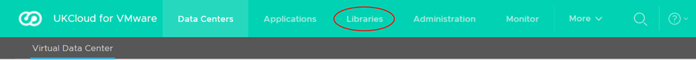
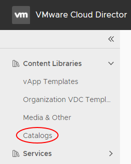
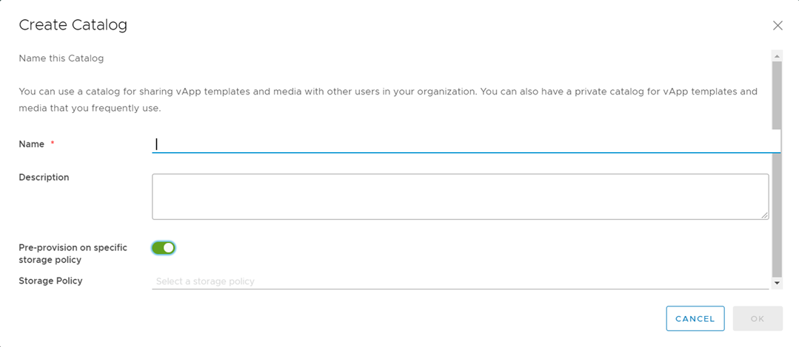
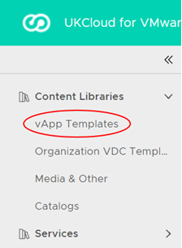
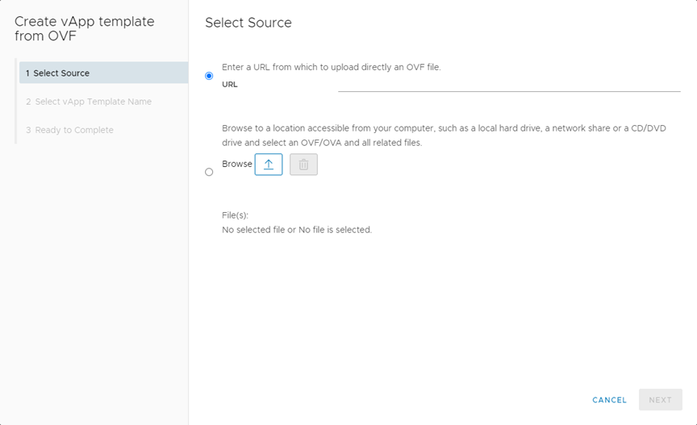
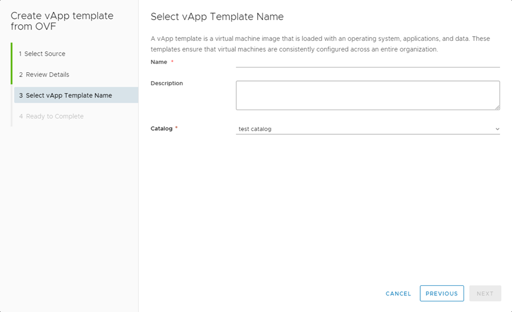
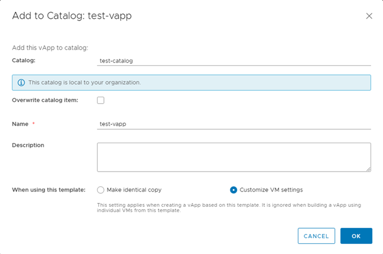

How to create a catalog
Overview
UKCloud provides a public catalog for you to use that contains standard virtual machine (VM) sizes and operating systems. The public catalog is a good place to start when you first deploy VMs into the UKCloud platform. However, you may want to create your own catalogs, containing specific applications or gold images, which you can then use to deploy VMs quickly.
Creating a catalog
The first step is to create an empty catalog:
In the VMware Cloud Director menu bar, select Libraries.

In the left navigation panel, under Content Libraries, select Catalogs.

On the Catalogs page, click New to create a new catalog.

In the Create Catalog dialog box, enter a Name for the catalog and give it a Description if needed.
To specify a particular storage policy for the catalog, select the Pre-provision on specific storage policy option then select the desired Storage Policy:
Tier1 is for high performance, high IOPS VMs
Tier2 is for everything else less demanding (recommended for ISO and templates)

When you're done, click OK.
To make the catalog visible to others within your organisation, click the three vertical dots and select Share.

In the Share Catalog dialog box, from the Share with radio buttons, select:
All Users and Groups to share the catalog with everyone in the organisation.
Specific Users and Groups to share the catalog with individual users or groups of users. Select the users and groups from the lists below by selecting the check box for the user or group and selecting the appropriate access level (Read Only, Read/Write or Full Control).

When you've added all the people who you want to access the catalog, click Save.
Populating a catalog
There are two ways to populate a catalog:
Creating a template from an OVF package
Note
Depending on the file size and network speed, the upload may take some time.
To upload an OVF package and assign it to a catalog:
On the Libraries page, in the left navigation panel, under Content Libraries, select vApp Templates.

On the vApps Templates page, click New.

In the Create vApp template from OVF dialog box, select the source of the OVF either by entering a URL or clicking the Browse icon to locate the file on your computer.

Tip
You can select multiple files by pressing the CTRL key and selecting additional files.
Click Next.
On the Review Details page, confirm the details of the OVF template and then click Next.
On the Select vApp Template Name page, enter a Name and Description for the template.
From the Catalog list, select the catalog in which you want to put the OVF, then click Next.

On the Ready to Complete page, review the details of the vApp template and when you're done, click Finish to deploy.
Adding an existing vApp
In the VMware Cloud Director Virtual Data Center dashboard, select the VDC in which the vApp you want to use is located.
In the left navigation panel, select vApps.

In the card for the vApp that you want to add to the catalog, select Actions then Add To Catalog.

You can add both running and stopped vApps to the catalog, although it's worth noting that creating a catalog image from a running vApp could affect performance.
In the Add to Catalog dialog box, from the Catalog list, select the catalog you want to add the vApp to.
Give the vApp template a Name and Description and define whether vApps deployed using this template are identical or customisable.
You can also overwrite an existing catalog item. If the catalog you're adding the vApp to is published externally, you'll see a warning.

When you're done, click OK.
You can check the progress by expanding the Recent Tasks section at the bottom of the VMware Cloud Director interface.
Feedback
If you find a problem with this article, click Improve this Doc to make the change yourself or raise an issue in GitHub. If you have an idea for how we could improve any of our services, send an email to feedback@ukcloud.com.